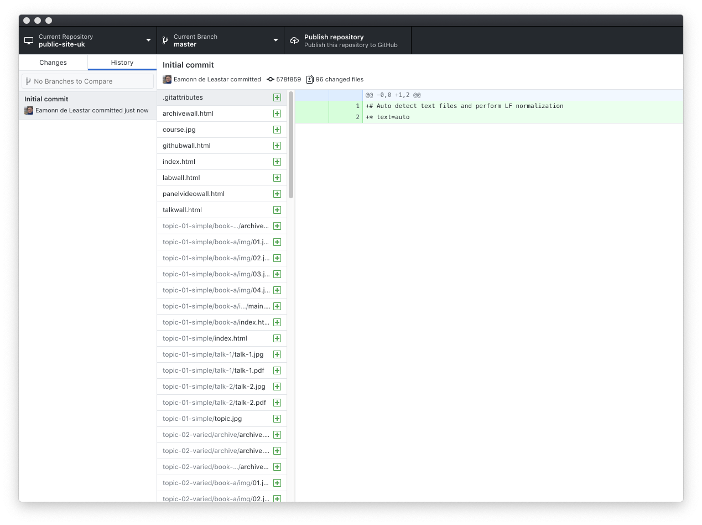
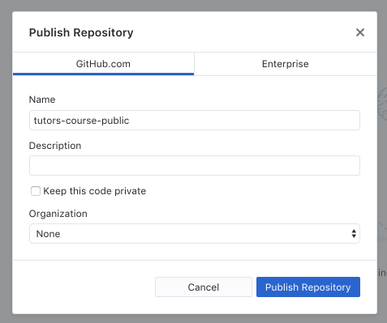

Objectives
Publishing a Lab to Github using Github Desktop
Github Gh-pages
Github provides a convenient, free and rapid static public web site publishing facility called Gh-Pages
This step assumes you have a github account, and git has been installed in your workstation.
Recall that tutors generates a static web site to the ./public-site folder:

This folder is what we need to publish - not the 'source' for the course web. To publish a course web requires these steps:
- determine the course web url
- Create the repository locally
- Commit all relevant files to the local repo
- Synchronise the repository with github
We will go through these steps now...
First, the course url. If we are going to publish the course on github, we will ultimately be using 2 urls.
- URL 1: The github.com reference to the repository containing the publick-site-uk folder
- URL 2: The published url of the course, which is the link you give to students.
URL 1: github repo
This is easy to work out. You give the repo a name - say tutors-course-public - and when you create and push the repo to github, this url will be:
URL 2: gh-pages repo
Again fairly easy to work out. When the site is available publicly, the url will be structured like this:
For this lab, the 2 urls will be:
- https://github.com/[YOUR-GITHUB-NAME]/tutors-course-public
- https://[YOUR-GITHUB-NAME].github.io/tutors-course-public
Here are examples of what to expect:
- https://github.com/edeleastar/tutors-course-public
- https://edeleastar.github.io/tutors-course-public
Work out both repo names now - and you will need to put the gh-pages url into the properties.yaml file in your course:
properties.yaml
slack : https://tutors-ts-group.slack.com/messages/CCKS0HR0Q
moodle : https://moodle.wit.ie/course/view.php?id=118143§ion=3
youtube : https://www.youtube.com/playlist?list=PLMW4bgOfD3Dwi6FWirJ3AQtXZ-N_hV3Eo
highlightstyle : railscasts
courseurl : https://wit-tutors.github.io/tutors-starter-public/
credits : Your name, WITChange the courseurl property to the gh-pages url now.
Create a Repository
Before proceeding with this step - it is important to make the following change to the tutors-start-0 course. This was created by cloning this repo here:
We need to break the link to that repo now. The simplest way to do this is to delete the .git folder inside tutors-starter-0. Just locate it and delete it using explorer/finder or whatever.
Open the Git Desktop app, and drag & drop the public-site folder onto the app:
When it lands on the app it will prompt you to create new repository. Press Create a Repository. In the subsequent dialog, give the repo a name - say tutors-course-public:

The app will initialize new git repository in the public-site folder. It should look like this:

Select the History button (next to 'Changes' on the toolbar), should see this:

Press the 'Publish repository' option:

You may need to enter the name of the repository again here. Also, uncheck the private option. Now press publish.
After a few minutes the site will be on your github account.

The url will be something like:
Your git desktop will revert to looking like this

Serving the course as as a web site
By default the site will not be published as a site yet. Do make it available, you will need to do the following:
- Go to your repo on github.com and select the repository settings:
- Scroll down to the gh-pages section:

- under Source select the Master Branch and press save.

Your course should now be published - the url is also visible now in the github pages settings:

In general the url will be structured like this:
Try the url now and verify that the site is published
Updating a site
Once the site is already published the workflow for updating a site is simplified:
- Edit the Course Source
- Regenerate the (using the tutors-ts command)
- Commit updates to the local repository
- Synchronise the local and remote repositories
- Check if updates published
We can try this now.
Edit the Course Source
Make a change to a course you may have been experimenting with - introduce an image or change the wording of a talk or modify the text in a step. If you are using Sublime, make sure to save the file(s). Remember, you are editing the files in tutors-starter-0, not tutors-starter-0/oublic-site-uk.
Regenerate the Course
From within the course source folder (tutors-starter-0), run the tutors-ts command:
tutors-ts course web generator: 2.5.0
:: Course Title
--> Simple
:: Simple
--> Lecture 1
--> Lecture 2
--> Lab-01
--> Varied
:: Varied
--> Lecture 3
--> Lecture 4
--> Lab-02
--> Lab-02
--> Resource I
--> Github Repo 1
--> Github Repo 2
--> Media
:: Media
--> Lecture 5
--> Lab-04
--> 12: Deployment
--> Resource I
--> Units
:: Units
--> Unit 1 Title
:: Unit 1 Title
--> Lecture 6
--> Lecture 7
--> Lab-05
--> Unit 2 Title
:: Unit 2 Title
--> Lecture 8
--> Lecture 9
--> Lab-06
--> Unit 3 Title
:: Unit 3 Title
--> Lecture 10
--> Lecture 11
--> Lab-07Commit updates to the local repository
Changes made by the above step will be automatically detected by Github Desktop. We commit the changes with a suitable message:
Enter a summary and press Commit to master.
Synchronise the local and remote repositories
The Push origin button will contain an indication that you are out of sync with the server:
Press the button now..
This should quickly update the remote site:
Check if updates published
Now check if the updates are live:
This may take a few minutes for the changes to percolate through the caches etc... Sometimes you can accelerate the process by refreshing your page in the browser while holding the shift key down (forces cache clearance for current site).
Only updated files will be pushed - so the push should be much quicker than the very first push to this repo.
Exercises
Exercise 1: Practice Updating & Publishing the Public Site
Try another edit to the source of the course to get used to the process. Remember, it will involve the following:
- Make the change to the source
- Regenerate the course (running
tutors-tscommand in the course folder) - Inspect the course locally first (opening public-site-uk/index.html) to see if the changes are as expected
- Commit auto detected modifications in Github Desktop
- Push the repository
Exercise 2: Publish the Source to github
Currently github hosts the public-site-uk contents only - and we are using the gh-pages facility to have the contents served as a web site. We could try creating another repo on github - this time to host the source of the course. I.e. the tutors-course-source contents.
Before you do this, however, there is one important step
- delete the .git directory in tutors-starter-0 folder.
We should have already done this. This is important - as the starter course was cloned from a git repository - and is currently linked to this origin. Once this the .git folder is deleted, we are breaking this link.
You can use the same steps we used to create the public site repo to create a separate repo for the course sources:
- drag and drop
tutors-starter-0onto the Github desktop app - press create a new repo
- commit all files to the local repo - this time stay with the
masterbranch - publish the repo to github
The source repo contains a file called .gitignore - which contains the following:
public-site-uk
private-site-uk
public-siteThis excludes these subdirectories from the repo - which we are happy to do. This is the structure we can aim for:

in our source repo, we can use the master branch.
Check the github web site on your account to see that you now have 2 separate repositories.